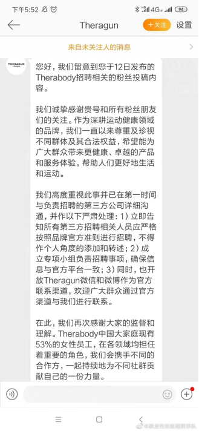

年度汇总|制止招聘性别歧视
原创
Hurrah
煎茶小组
2023-01-21 10:38:54
据不完全统计，2022年，大队共曝光了240起招聘性别歧视行为，收到举报回复17个。7个回复表示已经认真处理，撤回了招聘信息或进行了修改；7个回复认为岗位特殊，仅限男性不存在性别歧视。其中，仅消防救援岗提到一线岗位穿戴设备30公斤，属于女职工禁忌从事的劳动范围，其它多使用“工作强度大”“面临突发情况”等模糊表述，另开福区教育局认为男女分岗招聘是尊重教育规律。2个回复表示网传招聘、招生信息与实际情况不符，官方信息没有性别限制。还有1个回复表示非常重视，已经开始了调查，但未告知后续进展。
01
消除
就业性别歧视
1月9日，东北林大：网络发布信息与招生实际内容严重不符。
大队收到投稿：东北林大研究生调剂有关专业要求男性优先。
东北林大官方账号回复：
网络发布的信息与招生实际内容严重不符，会保留追究发布不实信息的团体和个人的法律责任的权利。
来源：https://wenfa.nefu.edu.cn/info/1198/1171.htm
02
消除
就业性别歧视
1月19日，上海市消防救援总队：消防队一线岗位穿戴装备30公斤，故不招女性。
大队收到投稿：
上海市消防救援总队，招聘780名政府专职消防员，
其中战斗员563名、执勤车驾驶员186名、船艇操控员4名、水域救援员10名、战保车驾驶员10名、汽修员7名，都只限男性。
举报回复：
根据《女职工禁忌从事的劳动范围》第三条规定，消防队一线岗位穿戴装备30公斤，故不招女性。
03
消除
就业性别歧视
1月27日，上海市政工程设计研究总院：已对此行为进行批评并删除招聘公告。
大队收到投稿：
上海市政工程设计研究总院，招聘招投标专员，男性优先。
上海市政总院电话回复：属于设计院招聘而非总院，已对此行为进行批评并删除该公告。
04
消除
就业性别歧视
1月31日，阳春市委组织部：虚心接受，加以改正，重新刊发公告。
大队收到投稿：
阳春市委组织部，招聘村干部，要求女性已婚，且一定要在丈夫所在村委工作。
举报回复：第5个小点原意为“已婚女性要求在丈夫户籍所在村（社区）报名，选聘后在丈夫户籍所在村（社区）工作”，这是
基于女性“春苗”工程村级班子储备人才家庭居住与服务群众的实际情况而作出的考虑
。对您所指出的问题，我们
虚心接受，认真加以改正，并会在“阳春党建”重新刊发公告。
05
消除
就业性别歧视
2月5日，赣州市立医院：更正并重新发布招聘公告，删除岗位条件中“适合男性”的内容。
大队收到投稿：
赣州市立医院，招聘多个科室医生，备注本岗位较适合男性。
江西赣州市立医院回复：
06
消除
就业性别歧视
2月12日，Theragun中国：已经严肃处理，欢迎大家监督。
大队收到投稿：筋膜枪品牌Theragun@Theragun ，招聘时性别歧视，只要男性。
Theragun回复：
已对此事件严肃处理，并欢迎大家监督。

07
消除
就业性别歧视
2月13日，宁波市海曙区综合行政执法局：工作的特殊性和工作强度，对体能和身体素质要求较高，不适合女性工作。
大队收到投稿：
宁波市海曙区综合行政执法局，招聘派遣制工作人员10名，要求男性。
海曙区综合行政执法局回复：您好！您在1月16日反映的问题已收悉，经海曙区综合行政执法局相关部门调查了解，现将答复意见回复如下：近期，我局秀托劳务派遣公司向社会公开招聘城管铁骑执法辅助人员若干名。城管铁骑是一支由男性组成的执法辅助队伍，队员需骑两轮摩托车机动处理海曙区域内综合行政执法辅助工作，应对各类突发性事件，参与抗洪抢险、一线防疫等高强度工作。
因其工作的特殊性和工作强度，对体能和身体素质要求较高，不适合女性工作，故本次招聘要求为男性。
感谢您对海曙区综合行政执法工作的关注和支持！
08
消除
就业性别歧视
2月19日，开福区教育局：
为尊重教育规律设置男女分岗。
大队收到投稿：
长沙市开福区招聘教师同一岗位男女比例，一个是个位数，一个是百位数。
相关工作人员的电话回复，大概内容为：因教育系统女的多，
为调整教师男女比例，设置男女岗位招聘是符合教学实际情况的，没有性别歧视。
长沙市开福区教育局回复：经调查，2021年开福区公开招聘教师职数为330名，我们按岗位需求情况平均分配男女指标计划，其中女生岗位职数为169名（占比51.2％），男生岗位职数为118名（占比35.7％），男女不限岗位（选调骨干教师和幼儿园教师岗位）职数为43名（占比13.1％）。
当前，中小学教师特别是小学教师女性教师居多，
为进一步优化教师性别比例结构，尊重教育规律，促进学生的身心健康发展和学校安全保卫等工作的开展，按男、女分设岗位，符合教育工作实际情况且不存在性别歧视
，感谢您对开福教育的关注和关心。
如不服本处理意见，可自收到本处理意见书之日起30日内向开福区人民政府提出复查申请，如逾期不提出复查申请，各级人民政府信访工作机构和其他行政机关不再受理。
09
消除
就业性别歧视
3月22日，成都第四人民医院：搬运者携带私心添加条件，与本院无关，欢迎符合条件的学生报考，不限男女。
大队收到投稿：
成都第四人民医院，招聘心理测评师，要求男性优先。（招聘公告里没写男性优先，但年级群里面发的招聘要求男性优先。
）
医院电话回复：本院的招聘是
以官网为主
，至于有人在搬运招聘启事中携带私心，添加了“男性优先”的条件，
与本院无关，本院欢迎符合条件的学生来报名，不限男女。
10
消除
就业性别歧视
3月23日，珠海商事服务局：已督促整改完毕，撤回存在性别歧视的招聘。
大队收到投稿：
珠海市横琴凯悦酒店，招聘员工餐厅厨师，要求优先男性。
3月23日，珠海政府男性工作人员电话回复：推脱提供的招聘链接打不开网页（但志愿者一直可以打开），针对招聘中提到“男士优先”，他认为“这不是什么大的问题，给别人扣性别歧视这么大的帽子。”
3月26日，珠海12345热线短信回复：
11
消除
就业性别歧视
4月1日，福州妇联：不存在就业性别歧视。
大队收到投稿：
福州市公安局，招聘警务辅助人员100名，全部要求为男性。
福州妇联回复：您好，感谢您对就业性别歧视工作的关注。收到诉求后，我会与福州市公安局取得联系。根据反馈，福州市公安局根据《福建省公安机关警务辅助人员招聘和考核暂行办法》以及市委市政府规范性文件开展招聘工作，已面向社会开展26期辅警招聘，累计招录女性人数占比44%。
考虑到岗位性质和身体素质差异，女性辅警以文职岗位、男性辅警以外勤岗位居多。因外勤岗位工作的复杂性、艰苦性和危险性，导致男性辅警人员流失率大，无法满足公安日常工作需求。
为解决当前男性辅警员额严重不足的现状，满足公安工作的实际需求，故开展此次辅警招聘工作，
不存在就业性别歧视
。特此反馈！
12
消除
就业性别歧视
4月1日，福州妇联：招聘精神科医师岗位男女人数相同，适合特殊工作岗位的实际需要，不存在就业性别歧视。
大队收到投稿：
福建省福州神经精神病防治院，招聘精神科医师，要求硕士学位，但是却男女分岗。
福州妇联回复：您好，感谢您对就业性别歧视工作的关注。收到诉求后，我会与福建省福州神经精神病防治院取得联系。根据反馈，该院现有封闭女病房5个、男病房7个，女职工占比75%；
为保障精神卫生公共职能、临床诊疗及护理安全的需求，降低精神病人暴力冲突等等引发的工作风险，需要配备男医师及男护士。
该用人单位招聘工作由市人社局、市卫健委批准，设岗条件在符合法律法规和有关政策规定的前提下，招聘精神科医师岗位男女人数相同，适合特殊工作岗位的实际需要，不存在就业性别歧视。特此反馈！
13
消除
就业性别歧视
5月9日，云南省慈善总会：决定取消岗位性别限制，并发布补充公告。
大队收到投稿：
云南省慈善总会招聘行政文员、项目专员，要求男性。
云南省慈善总会：
14
消除
就业性别歧视
8月15日，临朐人社局：删除附件“限男性”的要求，并及时发布调整公告。
大队收到投稿：
临朐国企，招聘35个岗位，要求12个岗位限男性。
临朐人社局回复：
15
消除
就业性别歧视
9月3日，北海银滩国家旅游度假区管理委员会：招聘方案依法依规，根据工作需求设置录取条件，不存在性别歧视。
大队收到投稿：
北海银滩国家旅游度假区管理委员会，招聘社会管理人员等岗位，要求男性35岁以下女性30岁以下。
北海银滩国家旅游度假区管理委员会回复：经查，
我委对以上3个拟招聘岗位的报名资格条件，是严格按照《北海市市直机关后勤服务人员实行聘用制的实施办法》（北编办〔2013］23号）执行的。
其中关于对后勤服务人员聘用岗位资格条件年龄的要求，是根据该实施办法中聘用条件“后勤岗位初次聘用人员年龄原则上男性不超过35岁，女性不超过30岁…”作出的。
因此，
我委对以上3个拟招聘岗位报名资格条件的设定及招聘方案的制定都是依法依规、并根据工作需要进行的，无违反相关程序招聘工作人员情况，也没有差别化提高对妇女录用标准、性别歧视等现象。
感谢你对银滩度假区建设管理和银管委工作的关注和支持。
16
消除
就业性别歧视
9月13日，合肥瑶海区城管局：考虑到工作面临突发情况多，工作时间长等情况，设置限制。
大队收到投稿：
合肥瑶海区城管局，招聘多岗位，要求男性。
合肥瑶海区城管局电话回复：协管员是为了补充上一次招聘的离职人员（离职了七个男的）。考虑到协管员
工作面临很多突发情况多，工作时间长啥啥啥的，所以仅限男性。
如果不满意，还可以继续反馈。
17
消除
就业性别歧视
11月22日，香奈儿客户服务部：
这则招聘信息违背了香奈儿鼓励女性，推动平等的核心价值观。
大队收到投稿：香奈儿（上海）人力部门招聘实习生，要求男性优先，投稿人发邮件进行了投诉。
香奈儿回复：这则招聘信息违背了香奈儿鼓励女性，推动平等的核心价值观，我们非常重视这件事，并且开始了调查，感谢你让我们知道了这件事。
END